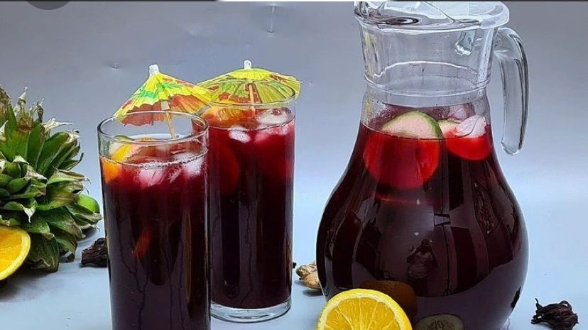

SOBOLO DRINK RECIPE

Sobolo Drink
How To Prepare Sobolo Drink. The Best Sobolo Recipe is a hibiscus drink made from Hibiscus/Roselle petals.
This recipe is the best sobolo recipe ever and the hibiscus used for this drink is said to be indigenous to West and East Africa
If you have ever been to a West African or Caribbean household, these are for sure something
you might drink especially at festivals, parties.
Sobolo drink is known as Sorrel in the Caribbean islands, Sobolo in Ghana, Zobo in Nigeria and
Bissap pretty much through out West Africa.
Ingredients for the Preparation
- 1 cup Hibiscus petals
- 1 medium-sized ripe Pineapple
- 2 teaspoons Pineapple syrup(optional)
- 1/2 cup sugar
- 3 stems of Ginger
- 3 grains of Hwentia (Cloves)
- 1 piece prekese (Optional)
Method of preparations:
- In a large saucepan, add water. Pour in Hibiscus petals. Make sure to cover the petals with enough water
- Under high heat, put Hibiscus petals on fire.
- Wash and peel pineapples and ginger. Chop into chunks
- Add the pineapple peels and hwentia to Hibiscus leaves. Let it boil for 20mins
(Until water changes to purplish color)
- Blend pineapple and ginger until smooth.
- Drain and separate the drink from the cooked leaves and peels using a sieve or a fine mash.
- Pour blended pineapple mixture into the sobolo drink and stir
- Allow the drink to cool down completely before you add your sugar and pineapple syrup (if optional)
- Store in fridge/freezer or add ice to sobolo drink. Enjoy!!